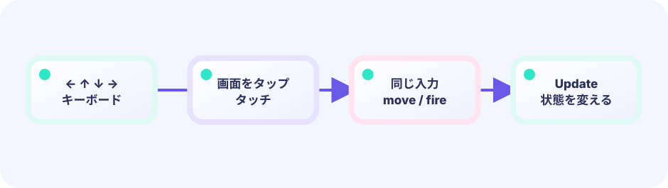
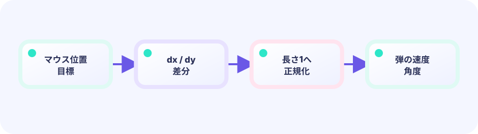

種類ごとにスライス／埋め込み
弾は []body。敵は type enemy struct { body; hp int } のように body を埋め込み、e.x へ直接触れます（Composition）。
type enemy struct { body; hp int }★★★★☆ / PLAYABLE
弾、敵、星、プレイヤーのように「種類の違うものがたくさん」出るゲームでは、種類ごとにリスト（スライス）を分け、いらないものは後ろから消します。見た目の主人公は 海老・天次郎、当たりは円です。
見た目はオリジナル主人公の 海老・天次郎。当たり判定は図形のままです。動きの計算は LEVEL 01と同じく、位置や得点などゲームの中身はUpdateで進めます。Drawは中身を変えず、画面への見せ方だけを担当します。
PLAYABLE / WEBASSEMBLY
矢印キーまたはドラッグで自機を動かし、スペース／タッチで弾を発射します。敵は「ウェーブ」というグループ単位で時間差で降ってきます。今のウェーブをすべて倒すと次のウェーブが来ます。ライフが0になるとゲームオーバーです。
はじめて読む人へ
自機・弾・敵を別リストにすると、それぞれ同じUpdateを繰り返せます。全弾×全敵を調べる総当たりは、教材の小さな数なら十分です。
このページの1本
説明と次のコードを対応させてから、ゲームで変化を確かめよう。
for _, b := range bullets { for _, e := range enemies { check(b,e) } }種類ごとのリスト
敵だけ動かす、弾だけ消す、という処理を分けるためにスライスを種類ごとに持ちます。iはそのリストの何番目かを表す番号です。
type Enemy struct {
X, Y float64
HP int
}
for i := range enemies {
enemies[i].X -= 2
}


DEEP DIVE / LISTS BY KIND
答えは種類ごとのリストです。「同じ種類のものを1つのスライスにまとめ、tickごとに同じ処理をかける」という考え方です。弾が1発でも100発でも、ループは1つ。不要になったら後ろから安全に削除します。
弾は []body。敵は type enemy struct { body; hp int } のように body を埋め込み、e.x へ直接触れます（Composition）。
type enemy struct { body; hp int }スライスを range でループし、全員を動かします。特定の1発だけ別扱いにする必要はありません。
for i := range g.bullets画面外に出た弾や倒した敵はリストから削除します。リストの後ろ（大きい番号）から順に消すと、まだ調べていない前の番号がずれにくいのがポイントです。
bullets[:i], bullets[i+1:]TRY IT / BULLET LIST
「発射」で弾を配列へ追加し、「1フレーム」で全部の y を減らし、画面外を消します。敵も自機も、種類ごとのリストで同じ型を管理します。
本物のゲームも bullets = append / 移動 / フィルタ のくり返しです。
TRY IT · GO
shots = append(shots, Shot{x: px, y: py}) for i := range shots { shots[i].y -= 8 } shots = filterOnScreen(shots)
—
THE DELETE PATTERN
for i := len(g.bullets) - 1; i >= 0; i--条件が合えばg.bullets = append(g.bullets[:i], g.bullets[i+1:]...)後ろから（インデックスを大きい方から）見ていくのがポイントです。要素を削除してもそれより前の添え字は変わらないので、削除漏れが起きません。
IN THE REAL GAME
自機の弾と敵を総当たりで調べます——弾ごとに、敵を1体ずつぜんぶ調べるという意味です（弾5発・敵3体なら、最大5×3=15回くらべます）。当たったら敵を削除し、弾も削除します。後ろからループしているので添え字がずれません。
自機狙い弾の dx/length*2.3 は「向きだけ残して長さを 2.3 にする」作業です。距離 length で割ると長さ1の矢印になり、×2.3 で速さが揃います（正規化）。
for bi := len(g.bullets) - 1; bi >= 0; bi-- {
hit := false
for ei := len(g.enemies) - 1; ei >= 0; ei-- {
if overlaps(g.bullets[bi], g.enemies[ei].body) {
// 敵を削除
g.enemies = append(g.enemies[:ei], g.enemies[ei+1:]...)
g.score += 100
hit = true
break
}
}
// 当たった弾か画面外の弾を削除
if hit || g.bullets[bi].y < -20 {
g.bullets = append(g.bullets[:bi], g.bullets[bi+1:]...)
}
}TODAY — まずここを見る
下のコードがこのゲームの本体です（主人公の絵は共有パッケージ internal/hero から読みます）。コピーして手元で開けます。その前に、上の「まずここを見る」3つだけ追ってください。
package main
import (
"fmt"
"image/color"
"math"
"math/rand"
"github.com/hajimehoshi/ebiten/v2"
"github.com/hajimehoshi/ebiten/v2/ebitenutil"
"github.com/hajimehoshi/ebiten/v2/inpututil"
"github.com/hajimehoshi/ebiten/v2/vector"
"github.com/kumagi/EbiShowcase/internal/hero"
"github.com/kumagi/EbiShowcase/internal/lessonlogic"
)
const (
screenWidth = 480
screenHeight = 720
)
// 丸い当たり判定つきの物体
type body struct {
x, y float64
vx, vy float64
radius float64
}
type enemy struct {
body
phase float64
reload float64 // 次に撃つまでの待ち
}
type star struct {
x, y float64
speed float64
}
type game struct {
player body
bullets []body
enemyBullets []body
enemies []enemy
stars []star
rng *rand.Rand
frame int
score int
lives int
wave int
shootWait int
invincible int // 無敵フレーム残り
gameOver bool
}
func newGame() *game {
g := &game{
player: body{x: screenWidth / 2, y: screenHeight - 92, radius: 15},
rng: rand.New(rand.NewSource(808)),
lives: 3,
}
for i := 0; i < 70; i++ {
g.stars = append(g.stars, star{
x: g.rng.Float64() * screenWidth,
y: g.rng.Float64() * screenHeight,
speed: 0.5 + g.rng.Float64()*2,
})
}
g.spawnWave()
return g
}
func clamp(v, low, high float64) float64 {
return math.Max(low, math.Min(high, v))
}
func overlaps(a, b body) bool {
return math.Hypot(a.x-b.x, a.y-b.y) < a.radius+b.radius
}
// aimVelocity returns a vector with the requested length. When the target is
// exactly on the shooter, there is no direction to normalize, so return zero
// instead of dividing by zero and producing NaN.
func aimVelocity(dx, dy, speed float64) (float64, float64) {
return lessonlogic.AimVelocity(dx, dy, speed)
}
func restartPressed() bool {
if inpututil.IsKeyJustPressed(ebiten.KeySpace) {
return true
}
if inpututil.IsMouseButtonJustPressed(ebiten.MouseButtonLeft) {
return true
}
if len(inpututil.AppendJustPressedTouchIDs(nil)) > 0 {
return true
}
return false
}
func pointerPosition() (x, y float64, ok bool) {
if ebiten.IsMouseButtonPressed(ebiten.MouseButtonLeft) {
px, py := ebiten.CursorPosition()
return float64(px), float64(py), true
}
ids := ebiten.AppendTouchIDs(nil)
if len(ids) > 0 {
px, py := ebiten.TouchPosition(ids[0])
return float64(px), float64(py), true
}
return 0, 0, false
}
func (g *game) spawnWave() {
g.wave++
count := min(4+g.wave, 10)
for i := 0; i < count; i++ {
g.enemies = append(g.enemies, enemy{
body: body{
x: float64(54 + i%5*93),
y: float64(-40 - i/5*70),
vy: 0.65 + float64(g.wave)*0.05,
radius: 17,
},
phase: float64(i) * 0.8,
reload: float64(80 + g.rng.Intn(100)),
})
}
}
func (g *game) hurt() {
if g.invincible > 0 || g.gameOver {
return
}
g.lives--
g.invincible = 120
if g.lives <= 0 {
g.gameOver = true
}
}
func (g *game) movePlayer() {
const accel = 0.7
const drag = 0.82
const maxSpeed = 7.0
if ebiten.IsKeyPressed(ebiten.KeyArrowLeft) || ebiten.IsKeyPressed(ebiten.KeyA) {
g.player.vx -= accel
}
if ebiten.IsKeyPressed(ebiten.KeyArrowRight) || ebiten.IsKeyPressed(ebiten.KeyD) {
g.player.vx += accel
}
if ebiten.IsKeyPressed(ebiten.KeyArrowUp) || ebiten.IsKeyPressed(ebiten.KeyW) {
g.player.vy -= accel
}
if ebiten.IsKeyPressed(ebiten.KeyArrowDown) || ebiten.IsKeyPressed(ebiten.KeyS) {
g.player.vy += accel
}
targetX, targetY, pointer := pointerPosition()
if pointer {
g.player.vx += clamp((targetX-g.player.x)*0.08, -accel*1.8, accel*1.8)
g.player.vy += clamp((targetY-g.player.y)*0.08, -accel*1.8, accel*1.8)
}
g.player.vx = clamp(g.player.vx*drag, -maxSpeed, maxSpeed)
g.player.vy = clamp(g.player.vy*drag, -maxSpeed, maxSpeed)
g.player.x = clamp(g.player.x+g.player.vx, 22, screenWidth-22)
g.player.y = clamp(g.player.y+g.player.vy, 90, screenHeight-52)
}
func (g *game) tryShoot() {
if g.shootWait > 0 {
g.shootWait--
}
shooting := ebiten.IsKeyPressed(ebiten.KeySpace) ||
ebiten.IsMouseButtonPressed(ebiten.MouseButtonLeft) ||
len(ebiten.AppendTouchIDs(nil)) > 0
if shooting && g.shootWait == 0 {
g.bullets = append(g.bullets, body{
x: g.player.x, y: g.player.y - 20,
vy: -10, radius: 5,
})
g.shootWait = 9
}
}
// --- ここから Update ---
func (g *game) Update() error {
if g.gameOver {
if restartPressed() {
*g = *newGame()
}
return nil
}
g.frame++
if g.invincible > 0 {
g.invincible--
}
// 背景の星を流す
for i := range g.stars {
g.stars[i].y += g.stars[i].speed
if g.stars[i].y > screenHeight {
g.stars[i].y = 0
g.stars[i].x = g.rng.Float64() * screenWidth
}
}
g.movePlayer()
g.tryShoot()
// 弾を動かす
for i := range g.bullets {
g.bullets[i].x += g.bullets[i].vx
g.bullets[i].y += g.bullets[i].vy
}
for i := range g.enemyBullets {
g.enemyBullets[i].x += g.enemyBullets[i].vx
g.enemyBullets[i].y += g.enemyBullets[i].vy
}
// 敵の移動と射撃
for i := range g.enemies {
e := &g.enemies[i]
e.y += e.vy
e.x += math.Sin(float64(g.frame)*0.025+e.phase) * 1.2
e.reload--
if e.reload <= 0 && e.y > 60 {
dx := g.player.x - e.x
dy := g.player.y - e.y
vx, vy := aimVelocity(dx, dy, 2.3)
g.enemyBullets = append(g.enemyBullets, body{
x: e.x, y: e.y + 15,
vx: vx,
vy: vy,
radius: 7,
})
e.reload = float64(max(42, 125-g.wave*5) + g.rng.Intn(70))
}
}
// 自分の弾 × 敵
for bi := len(g.bullets) - 1; bi >= 0; bi-- {
hit := false
for ei := len(g.enemies) - 1; ei >= 0; ei-- {
if overlaps(g.bullets[bi], g.enemies[ei].body) {
g.enemies = append(g.enemies[:ei], g.enemies[ei+1:]...)
g.score += 100
hit = true
break
}
}
if hit || g.bullets[bi].y < -20 {
g.bullets = append(g.bullets[:bi], g.bullets[bi+1:]...)
}
}
// 敵の弾 × 自分
for i := len(g.enemyBullets) - 1; i >= 0; i-- {
b := g.enemyBullets[i]
offscreen := b.y > screenHeight+20 || b.x < -20 || b.x > screenWidth+20
if offscreen {
g.enemyBullets = append(g.enemyBullets[:i], g.enemyBullets[i+1:]...)
continue
}
if g.invincible == 0 && overlaps(g.player, b) {
g.enemyBullets = append(g.enemyBullets[:i], g.enemyBullets[i+1:]...)
g.hurt()
}
}
// 敵が下まで来たらダメージ
for i := len(g.enemies) - 1; i >= 0; i-- {
if g.enemies[i].y > screenHeight+30 {
g.enemies = append(g.enemies[:i], g.enemies[i+1:]...)
g.hurt()
}
}
if len(g.enemies) == 0 {
g.spawnWave()
}
return nil
}
// --- ここから Draw ---
func (g *game) Draw(screen *ebiten.Image) {
screen.Fill(color.RGBA{4, 11, 29, 255})
for _, s := range g.stars {
vector.DrawFilledCircle(screen, float32(s.x), float32(s.y), float32(0.8+s.speed*0.35), color.RGBA{160, 210, 255, 210}, false)
}
for _, b := range g.bullets {
vector.DrawFilledRect(screen, float32(b.x-2), float32(b.y-10), 4, 18, color.RGBA{255, 221, 86, 255}, false)
}
for _, b := range g.enemyBullets {
vector.DrawFilledCircle(screen, float32(b.x), float32(b.y), float32(b.radius), color.RGBA{255, 94, 122, 255}, false)
vector.StrokeCircle(screen, float32(b.x), float32(b.y), float32(b.radius+3), 1, color.RGBA{255, 170, 190, 150}, false)
}
for _, e := range g.enemies {
vector.DrawFilledCircle(screen, float32(e.x), float32(e.y), 17, color.RGBA{255, 91, 109, 255}, false)
vector.DrawFilledRect(screen, float32(e.x-24), float32(e.y-4), 48, 9, color.RGBA{130, 54, 210, 255}, false)
vector.DrawFilledCircle(screen, float32(e.x), float32(e.y+3), 5, color.RGBA{255, 222, 91, 255}, false)
}
// 無敵中は点滅
if g.invincible%12 < 6 {
hero.DrawCentered(screen, g.player.x, g.player.y, 40)
}
ebitenutil.DebugPrintAt(screen, fmt.Sprintf("SCORE %06d", g.score), 18, 18)
ebitenutil.DebugPrintAt(screen, fmt.Sprintf("WAVE %02d", g.wave), 205, 18)
ebitenutil.DebugPrintAt(screen, fmt.Sprintf("LIFE %d", g.lives), 390, 18)
if g.gameOver {
vector.DrawFilledRect(screen, 55, 280, 370, 150, color.RGBA{5, 14, 34, 235}, false)
ebitenutil.DebugPrintAt(screen, "MISSION FAILED\n\nTAP / SPACE TO RETRY", 155, 330)
} else {
ebitenutil.DebugPrintAt(screen, "MOVE: ARROWS / DRAG FIRE: SPACE / TOUCH", 72, 690)
}
}
func (g *game) Layout(_, _ int) (int, int) {
return screenWidth, screenHeight
}
func main() {
ebiten.SetWindowSize(screenWidth, screenHeight)
ebiten.SetWindowTitle("Space Shooter — Ebitengine")
if err := ebiten.RunGame(newGame()); err != nil {
panic(err)
}
}
BUILD IT LINE BY LINE / UPDATE工房
自機、敵、自弾、敵弾を一つのUpdateが順番に指揮します。長くなっても、各ブロックの入力と結果を追えば迷いません。
途中は波かっこが閉じていない場合があり、まだ実行できなくて正常です。各カードでは「何を貼るか」だけでなく、「なぜこの順番か」「Goのどの書き方が役立つか」を一つずつ確認します。コードは完成ゲームの実物から取り出しているため、最後まで貼ると本物のUpdateと同じになります。
ゲームオーバーならリスタートだけを見て戻ります。通常世界へ進む入口が一つに保たれます。
func (g *game) Update() error {
if g.gameOver {
if restartPressed() {
*g = *newGame()
}
return nil
}frameを増やし、invincibleが正の間だけ1減らします。> 0 のガードがあるので負の値になりません。
g.frame++
if g.invincible > 0 {
g.invincible--
}rangeのindexで全ての星を動かし、下へ抜けた星だけ上へ戻します。装飾もUpdateで位置が決まり、Drawはその位置を映します。
// 背景の星を流す
for i := range g.stars {
g.stars[i].y += g.stars[i].speed
if g.stars[i].y > screenHeight {
g.stars[i].y = 0
g.stars[i].x = g.rng.Float64() * screenWidth
}
}移動と射撃を名前付きメソッドへ分けます。Updateのこの2行だけで、プレイヤー操作の順序が読めます。
g.movePlayer()
g.tryShoot()自弾と敵弾は別sliceですが、x += vx、y += vyという同じ規則を持ちます。役割は分け、運動の考え方はそろえます。
// 弾を動かす
for i := range g.bullets {
g.bullets[i].x += g.bullets[i].vx
g.bullets[i].y += g.bullets[i].vy
}
for i := range g.enemyBullets {
g.enemyBullets[i].x += g.enemyBullets[i].vx
g.enemyBullets[i].y += g.enemyBullets[i].vy
}&g.enemies[i] でslice内の敵そのものを指し、再装填を減らします。射撃時は自機との差から速度を求め、新しい弾をappendします。
// 敵の移動と射撃
for i := range g.enemies {
e := &g.enemies[i]
e.y += e.vy
e.x += math.Sin(float64(g.frame)*0.025+e.phase) * 1.2
e.reload--
if e.reload <= 0 && e.y > 60 {
dx := g.player.x - e.x
dy := g.player.y - e.y
vx, vy := aimVelocity(dx, dy, 2.3)
g.enemyBullets = append(g.enemyBullets, body{
x: e.x, y: e.y + 15,
vx: vx,
vy: vy,
radius: 7,
})
e.reload = float64(max(42, 125-g.wave*5) + g.rng.Intn(70))
}
}削除しながらsliceを走査するためindexを末尾から減らします。命中した敵と弾を切り取り、得点を加えます。
// 自分の弾 × 敵
for bi := len(g.bullets) - 1; bi >= 0; bi-- {
hit := false
for ei := len(g.enemies) - 1; ei >= 0; ei-- {
if overlaps(g.bullets[bi], g.enemies[ei].body) {
g.enemies = append(g.enemies[:ei], g.enemies[ei+1:]...)
g.score += 100
hit = true
break
}
}
if hit || g.bullets[bi].y < -20 {
g.bullets = append(g.bullets[:bi], g.bullets[bi+1:]...)
}
}画面外なら先に削除してcontinue。残った弾だけ無敵時間と衝突を調べます。条件の安いものから落とすと読みやすく効率的です。
// 敵の弾 × 自分
for i := len(g.enemyBullets) - 1; i >= 0; i-- {
b := g.enemyBullets[i]
offscreen := b.y > screenHeight+20 || b.x < -20 || b.x > screenWidth+20
if offscreen {
g.enemyBullets = append(g.enemyBullets[:i], g.enemyBullets[i+1:]...)
continue
}
if g.invincible == 0 && overlaps(g.player, b) {
g.enemyBullets = append(g.enemyBullets[:i], g.enemyBullets[i+1:]...)
g.hurt()
}
}敵が画面下へ出たらsliceから消し、hurtを呼びます。弾の衝突と敵の突破が同じダメージ処理へ合流します。
// 敵が下まで来たらダメージ
for i := len(g.enemies) - 1; i >= 0; i-- {
if g.enemies[i].y > screenHeight+30 {
g.enemies = append(g.enemies[:i], g.enemies[i+1:]...)
g.hurt()
}
}lenは現在の敵数です。0になった瞬間にspawnWaveを呼び、次の遊びを用意してUpdateを終えます。
if len(g.enemies) == 0 {
g.spawnWave()
}
return nil
}Updateは入力とゲーム状態を進める仕事だけを持ちます。Drawを別の絵へ交換しても、ここで組み立てた操作・時間・衝突・勝敗は変わりません。
WITHOUT SLICES
弾を bullet1, bullet2, … と変数で持つと、最大数をあらかじめ決めなければなりません。数が増えるたびにコードを書き直す必要があります。
WITH ENTITY SLICES
スライスは必要なだけ伸び縮みします。ウェーブが増えて敵の数が変わっても、更新・描画のループは変わりません。
YOUR FIRST TUNING
spawnWave の count を増やすと敵が増えます。自機の弾の vy: -10 を変えると弾速が変わります。shootCooldown = 9 を小さくすると連射が速くなります。
FEEDBACK